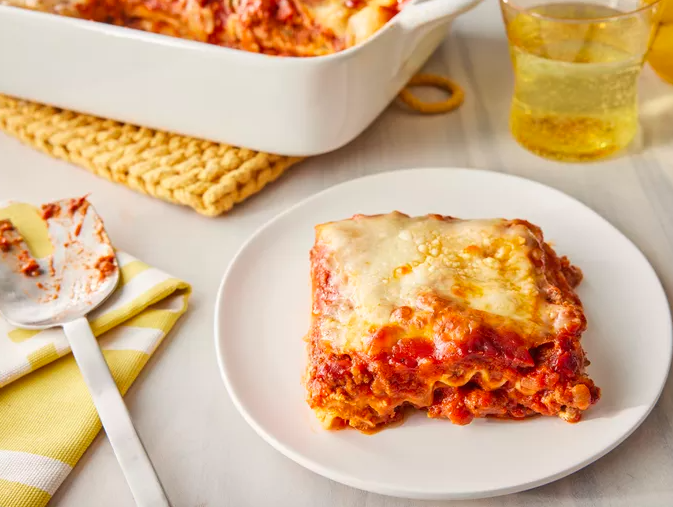

Return to Homepage
World's Best Lasagna

How to Make Lasagna
Making lasagna can be time-consuming, but
the results are well worth the wait.
You'll find a detailed ingredient list and
step-by-step instructions in the recipe below,
but let's go over the basics:
Lasagna Ingredients
- Meat: This super meaty
lasagna has sweet Italian sausage and
lean ground beef.
- Onion and garlic: An onion
and two cloves of garlic are cooked
with the meat to add tons of flavor.
- Tomato products: You'll need
a can of crushed tomatoes, two cans of
tomato sauce, and two cans of tomato paste.
- Sugar: Two tablespoons of
white sugar add subtle sweetness and enhance
the flavor of the sauce.
- Spices and seasonings: This
lasagna recipe is flavored with fresh
parsley, dried basil leaves, salt,
Italian seasoning, fennel seeds,
and black pepper.
- Lasagna noodles: Use
store-bought or homemade lasagna noodles.
- Cheeses: Parmesan,
mozzarella, and ricotta cheese make
this lasagna extra decadent.
- Egg: An egg helps bind
the ricotta so it doesn't ooze out of
the lasagna when you cut into it.
How to make Lasagna Step-By-Step
- Make the meat sauce.
- Cook the noodles.
- Make the ricotta mixture.
- Layer the lasagna according to the recipe instructions
- Cover with foil and bake.
- Let the lasagna rest before serving
How to Layer Lasagna
- Meat Sauce
- Noodles
- Ricotta mixture
- Mozzarella slices
- Meat sauce
- Parmesan cheese
- Repeat the layers, then top with the remaining Parmesan
Ingredients
- 1 pound sweet Italian sausage
- ¾ pound lean ground beef
- ½ cup minced onion
- 2 cloves garlic, crushed
- 1 (28 ounce) can crushed tomatoes
- 2 (6.5 ounce) cans canned tomato sauce
- 2 (6 ounce) cans tomato paste
- ½ cup water
- 2 tablespoons white sugar
- 4 tablespoons chopped fresh parsley, divided
- 1 ½ teaspoons dried basil leaves
- 1 ½ teaspoons salt, divided, or to taste
- 1 teaspoon Italian seasoning
- ½ teaspoon fennel seeds
- ¼ teaspoon ground black pepper
- 12 lasagna noodles
- 16 ounces ricotta cheese
- 1 egg
- ¾ pound mozzarella cheese, sliced
- ¾ cup grated Parmesan cheese
Steps
- Gather all your ingredients.
- Cook sausage, ground beef, onion, and garlic
in a Dutch oven over medium heat until well browned.
- Stir in crushed tomatoes, tomato sauce,
tomato paste, and water. Season with sugar,
2 tablespoons parsley, basil, 1 teaspoon salt,
Italian seasoning, fennel seeds, and pepper.
Simmer, covered, for about 1 ½ hours,
stirring occasionally.
- Bring a large pot of lightly
salted water to a boil. Cook lasagna noodles in
boiling water for 8 to 10 minutes.
Drain noodles, and rinse with cold water.
- In a mixing bowl, combine ricotta cheese with
egg, remaining 2 tablespoons parsley, and 1/2
teaspoon salt.
- Preheat the oven to 375 degrees F (190 degrees C).
- To assemble, spread 1 ½ cups of meat sauce
in the bottom of a 9x13-inch baking dish. Arrange
6 noodles lengthwise over meat sauce,
overlapping slightly. Spread with 1/2 of the
ricotta cheese mixture. Top with 1/3 of the
mozzarella cheese slices. Spoon 1 ½ cups
meat sauce over mozzarella, and sprinkle
with 1/4 cup Parmesan cheese.
- Repeat layers, and top with remaining
mozzarella and Parmesan cheese. Cover with
foil: to prevent sticking, either spray
foil with cooking spray or make sure the
foil does not touch the cheese.
- Bake in the preheated oven for 25 minutes.
Remove the foil and bake for an additional 25
minutes.
- Rest lasagna for 15 minutes before serving.